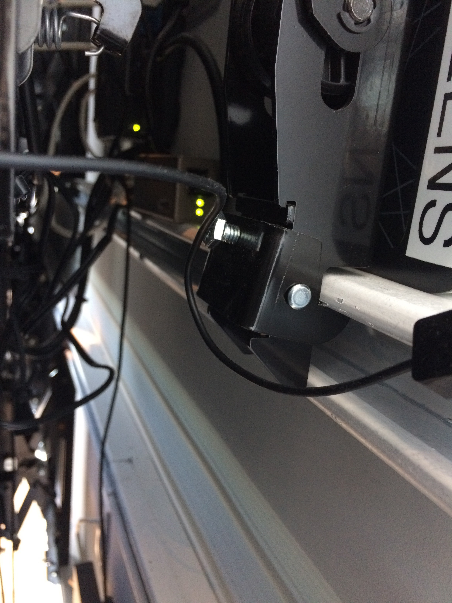
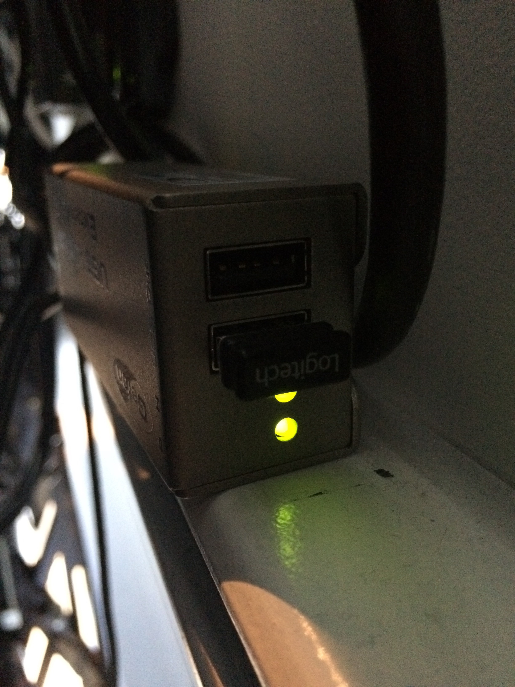
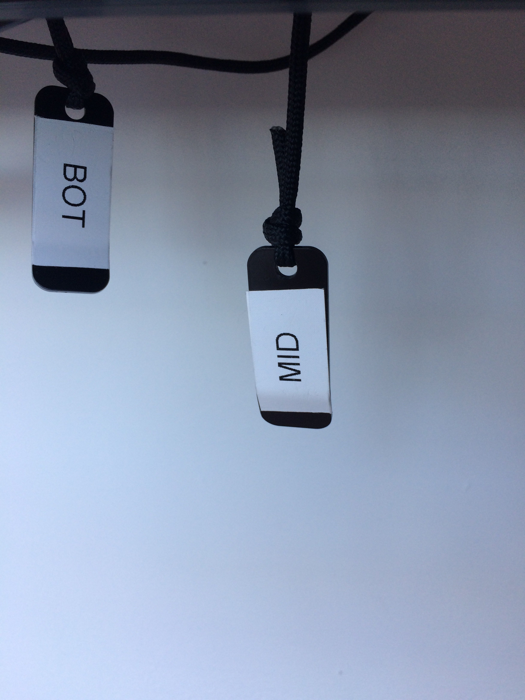
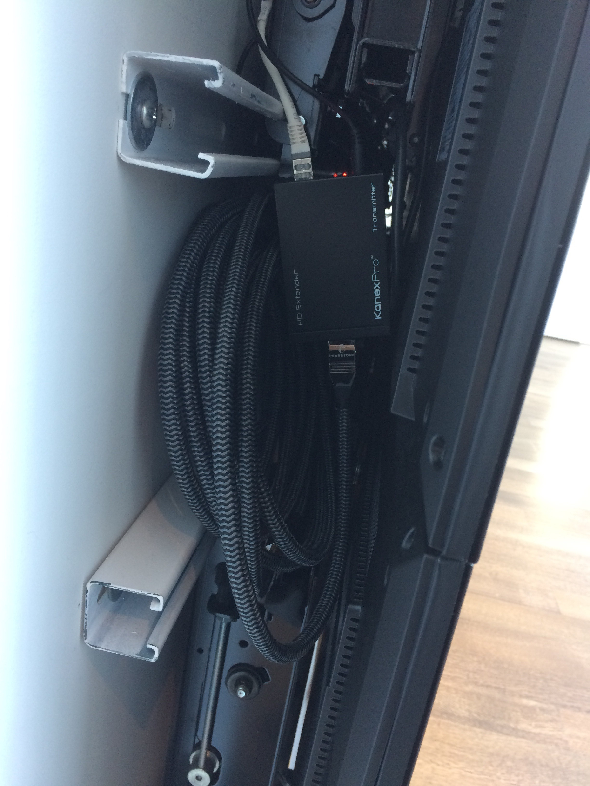
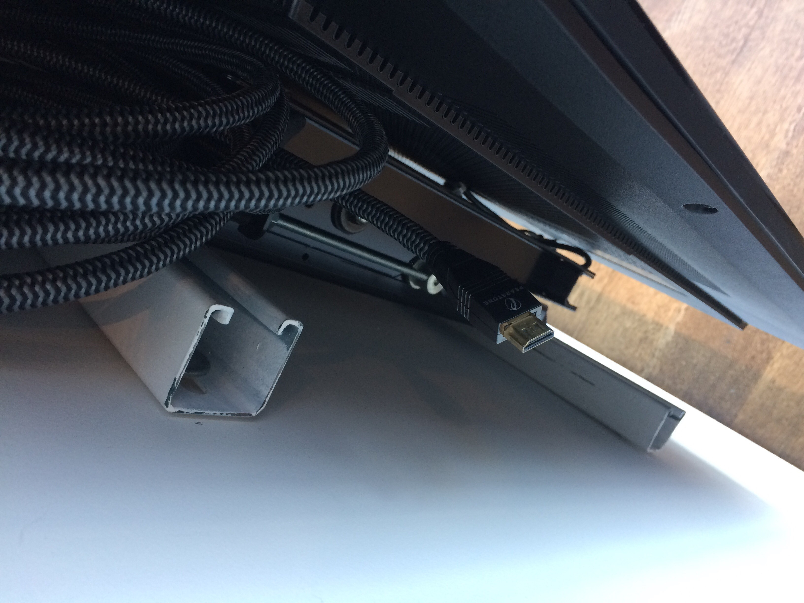

Lightbox Toolkit
Documentation on the Lightbox Gallery for collaborators and operators
PC Access
The PCs that connect to the projectors and screens can be controlled from both the network closet and the Lightbox Gallery.
If the PCs are off, they need to be turned on from the network closet.
 In order to load files onto the PCs, you can use a USB device in the ports on the PCs themselves, or in the ports accessible by folding out the screen in the middle row of the right column in the Lightbox Gallery. Alternately, the PC for the screens also has a disk drive. In addition, you can bring up Dropbox or a similar service on one of the PCs from the Lightbox Gallery, using the keyboards located behind the screens.
To pull out the screens, which allows access to electrical outlets behind each screen, USB ports behind the middle right screen, and an HDMI input behind the middle left screen (which you can make the main screen input), locate the tab hanging from the appropriate column labeled with the given row (BOT, MID, and TOP), and pull. Screens can be returned to their place by gently pushing them by the corners. When you're done, be sure to stow the tab among the cords at the bottom of the set of screens so they aren't visible.


To open files, start projects, and other tasks which require control of the PCs from the Lightbox Gallery, locate the keyboards tucked behind the screens on the righthand side. They should be labeled "SHADES" and "SCREENS".
Remember that shutting down the PCs is not reversible from the Lightbox Gallery: they can only be turned back on from the network closet.